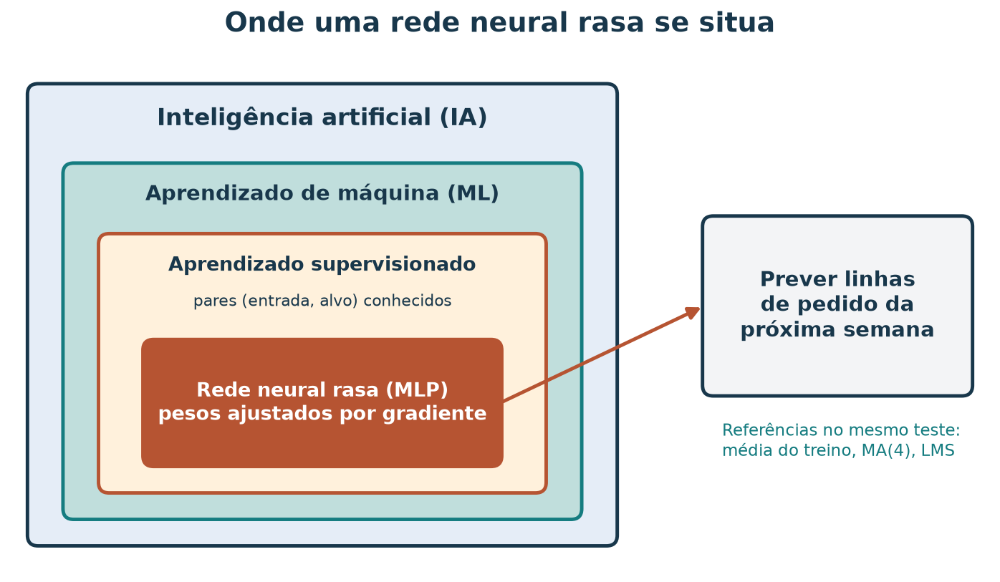
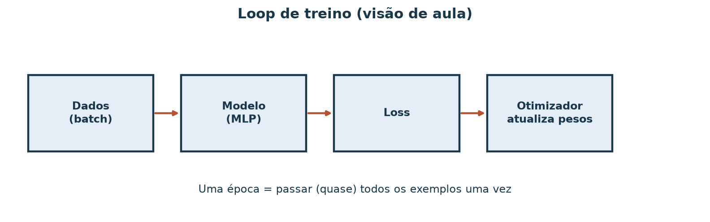
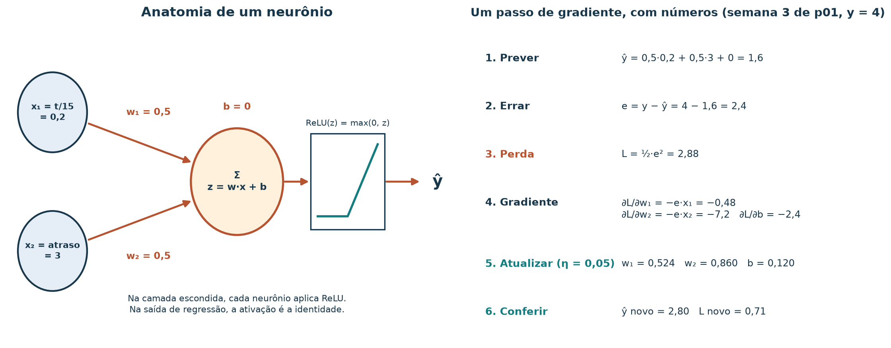
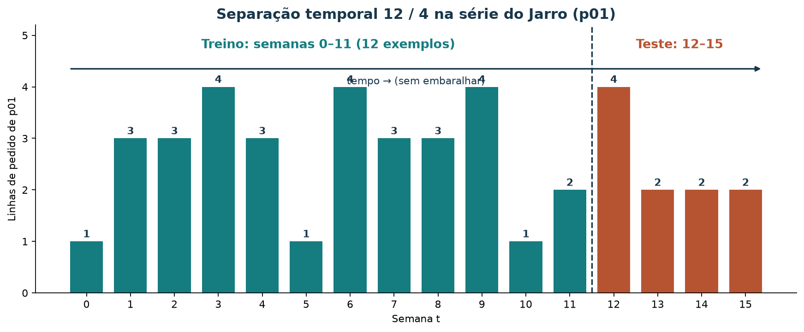
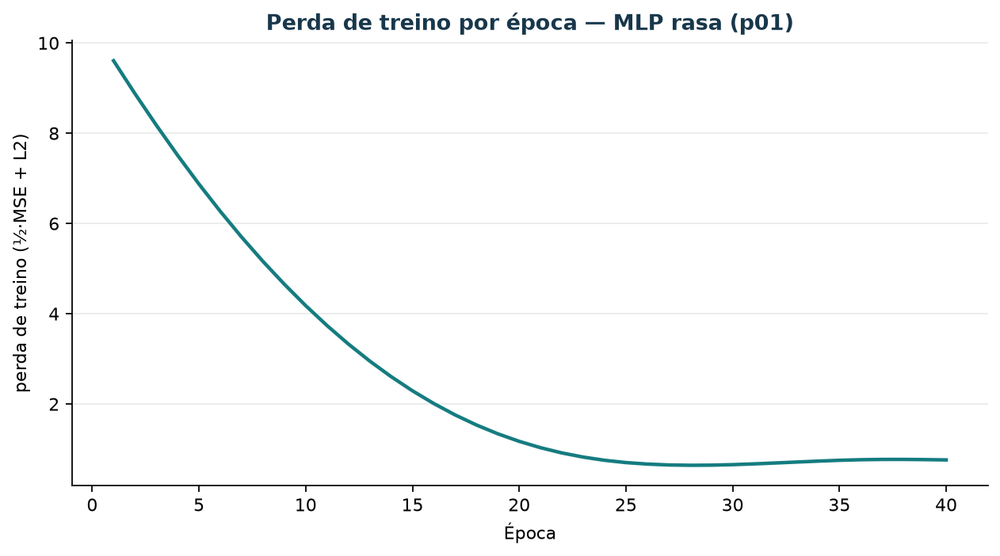
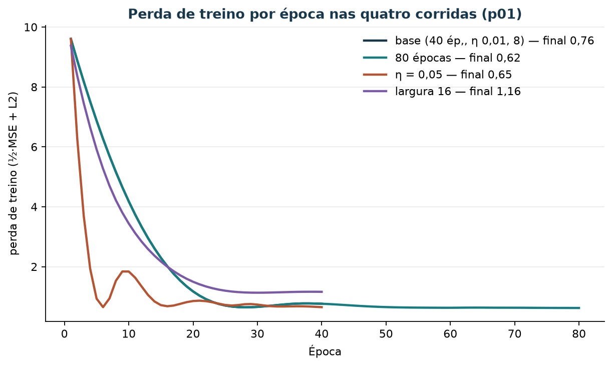

Treinar uma rede neural rasa para prever demanda
Leia a versão web com o explorador interativo incorporado.
A loja de artesanato já prevê as linhas de pedido da semana seguinte
com regras simples: a média das últimas quatro semanas erra, em média,
três quartos de linha por semana no Jarro (p01). Alguém da
equipe propõe trocar essa conta por uma rede neural. A pergunta desta
aula é concreta: com doze semanas de histórico, uma rede pequena
aprende algo que a média móvel ainda não captura?
Ao concluir este tutorial, você deverá conseguir descrever o laço de treino (prever, medir a perda, calcular o gradiente, atualizar os pesos), executar um passo de gradiente à mão, ler uma curva de perda, treinar uma MLP rasa com o scikit-learn e comparar o resultado com referências simples no mesmo período de teste. Você também mudará um hiperparâmetro de cada vez e relatará o que se moveu.
Os dados são sintéticos: as 16 semanas distribuem os totais do catálogo da loja didática. Os números servem para reproduzir o método e treinar o julgamento; eles não demonstram que redes neurais funcionam (ou falham) em vendas reais.
Roteiro de estudo
| Tempo sugerido | Atividade de estudo |
|---|---|
| 8 min | Situar redes neurais em IA e aprendizado de máquina |
| 12 min | Vocabulário do laço: modelo, perda, gradiente, otimizador, época, lote |
| 10 min | Um passo de gradiente com números |
| 10 min | Montar entradas e alvo a partir da série; separar treino e teste no tempo |
| 15 min | Treinar a MLP, ler a curva de perda e comparar com referências |
| 15 min | Mudar um hiperparâmetro de cada vez no explorador |
| 10 min | Limitações e exercício com resolução |
1. Onde uma rede neural rasa se situa
Inteligência artificial (IA) é o campo que desenvolve sistemas capazes de tarefas como perceber, prever e decidir. Aprendizado de máquina (ML) é a área da IA em que um algoritmo ajusta um modelo a partir de exemplos. Quando cada exemplo traz uma entrada e a resposta correta conhecida, o problema é de aprendizado supervisionado. Prever a demanda da semana a partir do que já aconteceu é um problema supervisionado: cada semana passada fornece um par (entradas, demanda observada).
Uma rede neural artificial é uma família de modelos formada por unidades simples, os neurônios, organizadas em camadas. Cada neurônio combina suas entradas com pesos, soma um viés e aplica uma função não linear. Uma rede rasa tem uma única camada escondida entre a entrada e a saída. A sigla MLP (multilayer perceptron) é o nome usual dessas redes de camadas densas.
O tutorial de perceptron / LMS mostrou uma única unidade linear (classificador com PLA ou reta LMS na demanda) e o limite do XOR com uma só reta. Aqui entram várias unidades e uma função de ativação suave: o erro de saída propaga-se pelas camadas (backpropagation) e a descida de gradiente atualiza todos os pesos. O laboratório geométrico do Caderno fica como lembrete visual da fronteira linear que a MLP generaliza.

Figura 1 — A rede rasa é um modelo supervisionado dentro do aprendizado de máquina. As áreas indicam pertencimento, não tamanho relativo. As referências ao lado são o padrão de comparação: a rede só ganha espaço se errar menos que elas no mesmo teste.
2. O vocabulário do laço de treino
| Termo | O que é | Neste laboratório |
|---|---|---|
| Modelo | Função com parâmetros ajustáveis que transforma entradas em previsão | MLP 2 → 8 → 1 |
| Parâmetros (pesos e vieses) | Números que o treino altera | 33 na rede base |
| Perda (loss) | Número que resume o erro nos exemplos de treino | metade do erro quadrático médio mais penalidade L2 |
| Gradiente | Direção, para cada parâmetro, em que a perda aumenta mais rápido | calculado pelo scikit-learn com backpropagation |
| Otimizador | Regra que usa o gradiente para atualizar os parâmetros | Adam |
| Taxa de aprendizado | Tamanho do passo de cada atualização | 0,01 na rede base |
| Lote (batch) | Conjunto de exemplos usado em uma atualização | as 12 semanas de treino de uma vez |
| Época | Uma passagem por todos os exemplos de treino | 40 na rede base |
| Hiperparâmetro | Escolha feita antes do treino, fora dos pesos | épocas, , largura da camada |
Com 12 exemplos e lote automático do scikit-learn
(min(200, n)), cada época tem um único
lote e, portanto, uma única atualização. Em bases grandes, uma
época reúne muitos lotes e muitas atualizações.

Figura 2 — O laço de treino. A cada volta, o modelo prevê, a perda mede o erro, o gradiente indica a direção de melhora e o otimizador altera os pesos. O laço se repete por um número fixo de épocas.
A rede em fórmulas
Para uma entrada , a camada escondida com 8 neurônios calcula
e a saída de regressão é uma combinação linear dessas ativações:
tem pesos, tem 8 vieses, tem 8 pesos e é um número: parâmetros. A ReLU zera valores negativos; sem ela, empilhar camadas lineares continuaria produzindo uma reta.
A perda que o scikit-learn minimiza
O erro quadrático médio nos exemplos de treino é
O MLPRegressor minimiza metade dessa
quantidade e soma uma penalidade pequena sobre o tamanho dos pesos,
controlada por alpha:
$$ L = \frac{1}{2n}\sum_{i=1}^{n}\left(y_i - \widehat{y}_i\right)^2
- \frac{\alpha}{2n}\sum_{w} w^2 . $$
É esse
que aparece em loss_curve_ e nas curvas desta aula. Para
comparar com o erro de outros métodos, usamos o MAE no
teste, na mesma unidade da demanda:
A atualização
O gradiente descendente move cada parâmetro um passo contra o gradiente:
O Adam segue a mesma ideia, mas ajusta o tamanho do passo de cada parâmetro com médias móveis dos gradientes recentes (Kingma e Ba, 2015). O backpropagation é o procedimento que calcula todas as derivadas de uma rede reaproveitando os resultados camada a camada, da saída para a entrada (Rumelhart, Hinton e Williams, 1986).
3. Um passo de gradiente com números
Antes de deixar a biblioteca trabalhar, faça um passo à mão. Use um único neurônio de saída linear, sem camada escondida, para que as derivadas fiquem curtas:
As derivadas são
,
e
.
Tome a semana 3 de p01:
,
atraso
(demanda da semana 2) e alvo
.
Comece com
,
e
.

Figura 3 — Anatomia de um neurônio e um passo de gradiente. Na conta à mão a saída é linear; na rede do laboratório, os neurônios escondidos aplicam ReLU e a saída continua linear.
| Etapa | Conta | Resultado |
|---|---|---|
| Prever | 1,6 | |
| Errar | 2,4 | |
| Perda | 2,88 | |
| Gradientes | ; ; | −0,48; −7,2; −2,4 |
| Atualizar | , e assim por diante | 0,524; 0,860; 0,120 |
| Conferir | 2,80 (perda 0,71) |
A perda caiu de 2,88 para 0,71 em um passo. Repare no gradiente de : ele é quinze vezes maior que o de porque o atraso vale 3, enquanto o tempo normalizado vale 0,2. Entradas em escalas diferentes recebem passos de tamanhos diferentes; por isso é comum padronizar as entradas antes de treinar.
4. Da série a uma tabela de exemplos
A série de p01 está em dados/vendas_semanais.csv
(campos week_start, product_id,
order_line_count). As 16 semanas são:
| t | 0 | 1 | 2 | 3 | 4 | 5 | 6 | 7 | 8 | 9 | 10 | 11 | 12 | 13 | 14 | 15 |
|---|---|---|---|---|---|---|---|---|---|---|---|---|---|---|---|---|
| 1 | 3 | 3 | 4 | 3 | 1 | 4 | 3 | 3 | 4 | 1 | 2 | 4 | 2 | 2 | 2 |
Cada semana vira um exemplo com duas entradas e um alvo:
| Entrada | Fórmula | Exemplo na semana 12 |
|---|---|---|
| Tempo normalizado | 0,8 | |
| Atraso | (na semana 0, repete ) | 2 |
| Alvo | 4 |
O atraso usa apenas a semana anterior, que já é conhecida no momento da previsão. A separação é temporal: as semanas 0–11 formam o treino e as semanas 12–15, o teste. Nada é embaralhado.

Figura 4 — Treino no passado, teste no futuro relativo. Embaralhar as semanas deixaria o modelo ver demandas posteriores às que ele precisa prever.
Repare que, no teste, vai de 0,8 a 1,0, enquanto no treino ele vai de 0 a 0,733. A rede precisa extrapolar no tempo, uma tarefa em que redes com ReLU tendem a prolongar a última inclinação aprendida.
5. Treinar e ler o resultado
Na raiz do repositório:
uv run python scripts/demo_treino_mlp_demanda.pyO script usa MLPRegressor com uma camada escondida ReLU,
otimizador Adam, random_state=0 e alpha=1e-4.
Ele grava:
| Arquivo | Conteúdo |
|---|---|
redes/resultado_mlp_p01.json |
Formatos, MAE da referência e das quatro corridas |
redes/curvas_mlp_p01.json |
Perda por época, previsões de teste de cada corrida e das referências |
imagens/treino-redes-mse-p01.png |
Curva de perda da corrida base |
imagens/treino-redes-fluxo.png |
Diagrama do laço |
Resultado esperado no JSON, com scikit-learn 1.9:
shape_x_treino:[12, 2](12 exemplos, 2 entradas);dtype_y:float64 (linhas de pedido);mae_baseline_media:0.8333…;mae_mlp_base:1.4737….
Versões diferentes da biblioteca podem alterar as casas decimais. Se isso acontecer, use os números do seu JSON e mantenha o raciocínio.

Figura 5 — A perda de treino cai de 9,61 para 0,76 em 40 épocas e ainda está descendo no fim. A curva mede o ajuste às semanas de treino; ela não informa o erro no teste.
A rede contra as referências
No mesmo teste de quatro semanas (demanda observada 4, 2, 2, 2):
| Método | Previsões nas semanas 12–15 | MAE no teste |
|---|---|---|
| Média do treino () | 2,67; 2,67; 2,67; 2,67 | 0,833 |
| Ingênua (repete a semana anterior) | 2; 4; 2; 2 | 1,000 |
| MA(4) (média das 4 semanas anteriores) | 2,50; 2,75; 2,25; 2,50 | 0,750 |
| LMS / ADALINE (reta online, reajustada a cada semana) | 2,49; 3,01; 2,71; 2,48 | 0,928 |
| MLP base | 3,66; 3,79; 3,84; 3,93 | 1,474 |
A MLP base prevê quase 4 linhas em todas as semanas de teste. Ela não terminou de ajustar (a perda ainda caía) e extrapola uma tendência de alta que a série não confirma. A média móvel, sem parâmetro algum aprendido por gradiente, continua sendo a melhor previsão desta tabela.
6. Um hiperparâmetro de cada vez
O script repete o treino mudando uma escolha por vez a partir da corrida base (40 épocas, , 8 neurônios). Mudar uma coisa de cada vez permite atribuir a mudança no resultado à escolha alterada.
| Corrida | O que muda | Perda final de treino | MAE no teste |
|---|---|---|---|
base |
— | 0,762 | 1,474 |
mais_epocas |
80 épocas | 0,620 | 1,162 |
lr_maior |
0,648 | 0,964 | |
mais_larga |
16 neurônios (65 parâmetros) | 1,160 | 1,102 |
Leitura:
- Mais épocas dá ao otimizador mais passos: a perda cai mais e o MAE de teste melhora, porque a rede base estava subajustada.
- Taxa de aprendizado maior acelera a descida. A curva oscila nas primeiras épocas (veja no explorador) e termina com o melhor MAE das quatro corridas, 0,964.
- Camada mais larga, com o mesmo número de épocas e a mesma taxa, termina com perda maior: mais parâmetros pedem mais passos para ajustar. O MAE melhora em relação à base por outra razão: a rede passa a seguir o atraso (prevê 4,04 na semana 13, logo depois do 4 da semana 12).
- Nenhuma corrida alcança a média do treino (0,833) nem a MA(4) (0,750).
7. Como avaliar sem se enganar
- Teste intocado. As semanas 12–15 não participam do treino nem da escolha de hiperparâmetros. Ao escolher a corrida com menor MAE de teste, você passa a usar o teste para selecionar; numa avaliação final, reserve outro período.
- Referência antes do modelo. Uma rede só merece espaço se errar menos que as referências simples no mesmo período e com a mesma métrica.
- Poucas semanas, muita variação. Com 4 semanas de teste, uma única semana difícil (o 4 da semana 12) pesa um quarto do MAE. Diferenças de poucos centésimos não sustentam uma conclusão.
- Semente. A inicialização dos pesos é aleatória;
random_state=0torna o resultado reprodutível, mas outra semente produziria outros números. - Sobreajuste e subajuste. A rede base está subajustada (perda ainda caindo). Com 33 parâmetros e 12 exemplos, mais treino também pode levar ao sobreajuste: memorizar o ruído das semanas de treino.
8. Explore as corridas com BI
O explorador de redes neurais mostra as quatro curvas de perda sobrepostas, as previsões de cada corrida contra a série observada, as barras de MAE com as referências e uma tabela das semanas de teste com exportação em CSV e PNG. Você pode usá-lo incorporado à versão web deste tutorial ou abrir o HTML a partir de uma cópia local do repositório. Consulte o roteiro de exploração.
Experimente o treino neste tutorial
Compare curvas de perda, previsões e MAE das corridas de treino. As 16 semanas são sintéticas.
O painel apresenta resultados já calculados pelo script: trocar a corrida não treina uma rede nova no navegador.

Figura 6 — Espelho estático do painel 02. A curva laranja () desce rápido, oscila e se estabiliza; a roxa (largura 16) desce mais devagar.

Figura 7 — Espelho estático do painel 04. As barras coloridas são corridas da MLP; as cinzas, referências. A linha tracejada marca a MA(4), a menor barra.
Atividade no painel
- Escolha a corrida
basee marque Média do treino. Em que semana de teste a rede erra mais? Por quê? - Troque para . Descreva a forma da curva de perda nas primeiras dez épocas.
- Compare
80 épocaselargura 16: qual termina com menor perda de treino e qual tem menor MAE de teste? Explique por que as duas ordens podem diferir. - Exporte o CSV e um PNG e escreva três frases para a equipe da loja.
Resolução comentada: a rede base erra mais nas
semanas 13–15 (prevê cerca de 3,8 quando a demanda foi 2), pois
extrapola uma tendência de alta. Com
,
a perda cai de 9,61 para 0,65 em seis épocas, sobe até 1,84 nas épocas
9–10 e volta a cair até cerca de 0,7: o passo grande ultrapassa a região
de mínimo antes de se acomodar. 80 épocas tem perda de
treino menor (0,62 contra 1,16), mas MAE de teste maior (1,16 contra
1,10): ajustar melhor o passado não garante prever melhor o futuro. Uma
mensagem possível: “Testamos uma rede neural pequena nas últimas quatro
semanas do Jarro. A melhor configuração errou 0,96 linha por semana; a
média móvel de quatro semanas errou 0,75. Com este histórico,
recomendamos manter a média móvel e reavaliar quando houver mais
semanas.”
9. Limitações
- Doze exemplos de treino e quatro de teste são suficientes para mostrar o laço, não para escolher um modelo de produção.
- A entrada de tempo normalizado força a rede a extrapolar no teste. Outras entradas (mais atrasos, médias móveis como atributo) mudariam o problema.
- O scikit-learn esconde o backpropagation e o Adam; o passo à mão da seção 3 usa um único neurônio linear para que a conta caiba no caderno.
- A série é sintética e de um único produto.
10. Exercício: seu relatório de treino
- Rode o script e copie
shape_x_treino,mae_baseline_mediaemae_mlp_base. - Faça um passo de gradiente à mão para a semana 7 de
p01com o neurônio linear da seção 3, os mesmos pesos iniciais e . Informe previsão, erro, perda, gradientes, pesos novos e perda depois do passo. - Conte os parâmetros da rede
mais_larga(2 → 16 → 1) e mostre a conta. - Para cada uma das três mudanças da seção 6, escreva uma frase sobre o que se moveu na perda de treino e no MAE de teste.
- Em um parágrafo, recomende manter ou trocar a MA(4) e cite uma limitação da evidência.
Resolução comentada
1. shape_x_treino = [12, 2],
mae_baseline_media ≈ 0,833,
mae_mlp_base ≈ 1,474 (com scikit-learn 1.9; outras versões
podem variar nas casas decimais).
2. Na semana 7: , atraso , alvo . Previsão ; erro ; perda . Gradientes: (), (), (). Pesos novos: , , . Nova previsão ; perda .
3. parâmetros.
4. Mais épocas: a perda cai de 0,762 para 0,620 e o MAE, de 1,474 para 1,162. Taxa maior: perda 0,648 e MAE 0,964, o melhor das quatro. Mais largura: perda sobe para 1,160 porque 40 passos não bastam para 65 parâmetros; o MAE cai para 1,102 porque a rede passa a seguir o atraso.
5. Exemplo: “No teste das semanas 12–15 de
p01, a MA(4) errou 0,75 linha por semana e a melhor rede,
0,96. Recomendo manter a MA(4). A comparação usa apenas quatro semanas
sintéticas de um produto e uma semente; uma rede pode se tornar
competitiva com mais histórico e outras entradas, o que exigiria nova
avaliação em período reservado.”
Referências bibliográficas e roteiro de leitura
Consulta dos materiais on-line: 7 nov. 2026.
- HAYKIN, Simon. Redes neurais: princípios e prática. 2. ed. Porto Alegre: Bookman, 2001. Para aprofundar: neurônio, perceptron de múltiplas camadas e retropropagação, em português.
- GOODFELLOW, Ian; BENGIO, Yoshua; COURVILLE, Aaron. Deep learning. Cambridge, MA: MIT Press, 2016. Texto on-line em inglês. Para aprofundar: capítulos 6 (redes feedforward) e 8 (otimização).
- NIELSEN, Michael. Neural networks and deep learning. Determination Press, 2015. Livro on-line em inglês. Para consultar: gradiente descendente e backpropagation passo a passo.
- RUMELHART, David E.; HINTON, Geoffrey E.; WILLIAMS, Ronald J. Learning representations by back-propagating errors. Nature, v. 323, p. 533–536, 1986. DOI: 10.1038/323533a0.
- KINGMA, Diederik P.; BA, Jimmy. Adam: a method for stochastic optimization. In: ICLR, 2015. arXiv:1412.6980.
- SCIKIT-LEARN. Neural network models (supervised).
Guia
do usuário em inglês e referência
do
MLPRegressor. Para consultar: perda,alpha,loss_curve_e conselhos de padronização das entradas. - HYNDMAN, Rob J.; ATHANASOPOULOS, George. Forecasting: principles and practice. 3. ed. OTexts, 2021. Livro on-line em inglês. Para aprofundar: avaliação de previsões com origem temporal e referências simples.
Artefatos no repositório
| Artefato | Papel |
|---|---|
dados/vendas_semanais.csv |
Série semanal sintética (16 semanas × 12 produtos) |
scripts/demo_treino_mlp_demanda.py |
Treino da MLP rasa, quatro corridas e referências |
material/redes/resultado_mlp_p01.json |
Resumo numérico das corridas |
material/redes/curvas_mlp_p01.json |
Curvas de perda e previsões de teste |
material/bi-redes/ |
Explorador interativo |
material/imagens/ (regenerar:
.local/scripts/gerar_figuras_redes.py) |
Diagramas desta aula |
scripts/gerar_bi_redes.py |
Dados do explorador e figuras bi-redes-*.png |